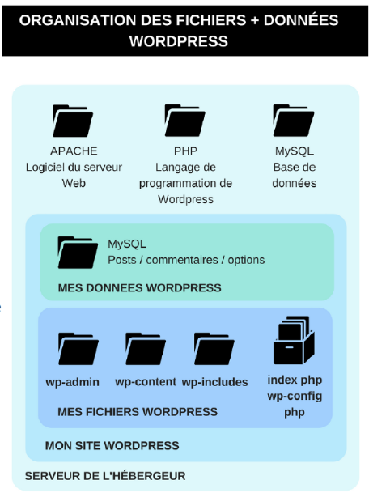

Pour fonctionner, WordPress est un logiciel qui fonctionne avec des fichiers et d’une base de données.

Base de données
Elle contient les articles, pages, réglages du site WordPress.
De plus, certains plugins ajoutent leurs propres tables à la base de données WordPress.
Le contenu de celle-ci change donc en fonction des plugins que vous activez ou désactivez.
Les fichiers
Il existe plusieurs types de fichiers :
– ceux qui permettent à WordPress de fonctionner (répertoire wp-admin et wp-includes)
– les fichiers des thèmes WordPress (répertoire wp-content/themes)
– les fichiers des plugins WordPress (répertoire wp-content/plugins)
– les fichiers ou médias (images, vidéos, etc.) que vous chargez par l’interface d’administration (répertoire wp-content/uploads)
Vous ne devriez jamais modifier la base de données ou des fichiers directement si vous n’êtes pas sûr de ce que vous faites.
L’interface d’administration de WordPress vous aidera à personnaliser votre site sans avoir à modifier à la main ces fichiers et ces données.